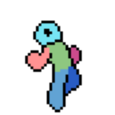

Togy
Piksel sanatlı bir platform macerası. Üst dünyadan alt dünyaya in, boss'larla yüzleş, seçtiğin tarot kartlarıyla oyunun kurallarını değiştir.

İki dünya, bir deste kart.
Togy'de yolculuk yukarıda başlar, ama asıl sınav aşağıda bekler. Her boss'tan önce çektiğin kartlar o savaşı senin için kolaylaştırabilir ya da zorlaştırabilir.
Üst ve alt dünya
Katmanlı, parallax arka planlı haritalarda ilerle; doğru noktada alt dünyaya geç ve geri dön.
Boss savaşları
Zıplayarak üstüne gelen boss'ları alt et; zafer, yeni yolların kilidini açar.
Tarot kartları
Savaş öncesi seçtiğin kartlar hızını, zıplamanı ve zorluğu değiştirir; doğru kombinasyonları bul.
Diyaloglar
Hikâye, karakterlerle yapılan konuşmalarla ilerler.
Dokunmatik kontroller
Telefon için tasarlandı; gamepad ve klavye desteği de var.
Çoklu dil
Oyunun içinden dil değiştirilebilir.
Ekran görüntüleri
Hemen dene.
APK'yı Android telefonuna indir ve kur. Kurulum sırasında "bilinmeyen kaynaklardan yükleme" izni vermen gerekebilir. Geri bildirimlerini çok isterim!